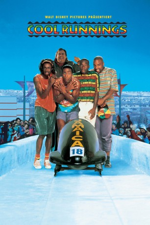
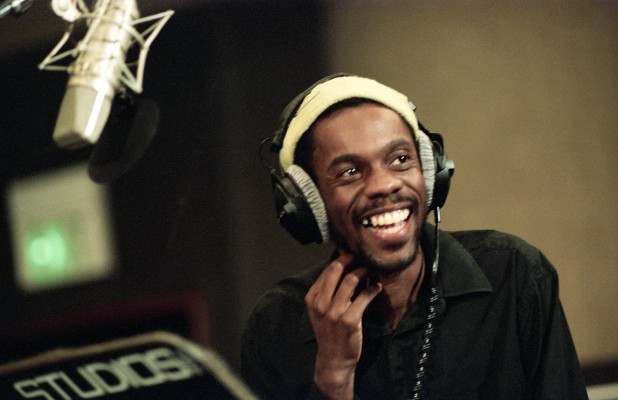
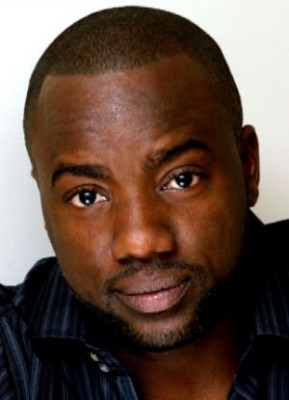
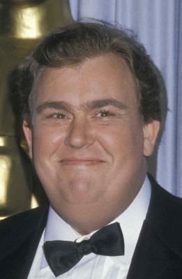
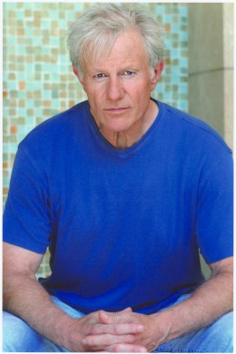
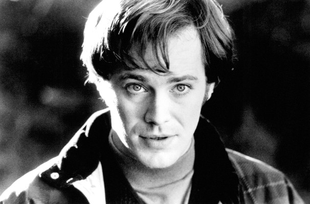
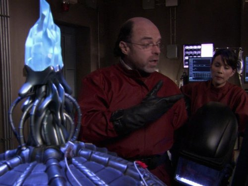
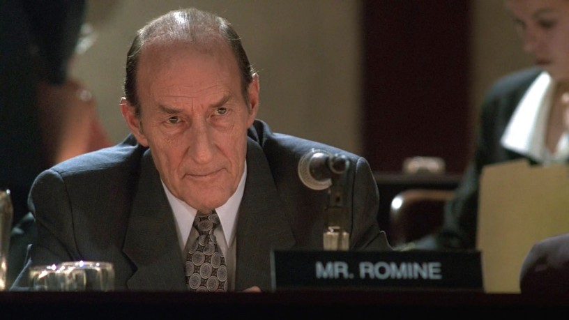
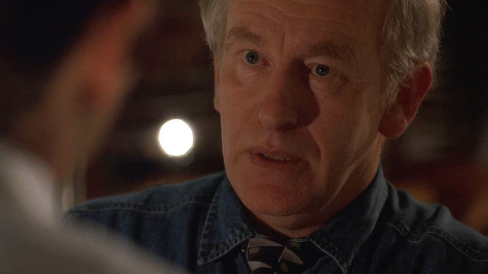

#4712 Cool Runnings - Dabei sein ist alles
Alternativ: Cool Runnings
 
 IMDB-Wertung: 6.9 / 10
IMDB-Wertung: 6.9 / 10  Metascore: 0
Metascore: 0 
COOL RUNNINGS ist die - fast - wahre Geschichte des ersten olympischen Bobteams aus Jamaika. Vier verwegene Jungs vereint ein großer Traum: der Gewinn einer Goldmedaille. Und das in einer ihnen völlig unbekannten Sportart. Mit viel Improvisation und den unorthodoxen Methoden ihres Trainers erkämpfen sich die vier ihr Ticket zu den Olympischen Winterspielen in Calgary. Belächelt von ihren Landsleuten und verspottet von der Konkurrenz, beginnt hier ihr größtes Abenteuer, das aus den anfänglichen Amateuren wirkliche Helden macht.
Jahr: 1993
Dauer: 92 Minuten
FSK: 0
Land: USA Studio: Buena Vista Pictures DistributionTonspuren:
Untertitel:
Auflösung: 1080p (1920x1040) Größe: 4044 MB
Genre: Abenteuer, Komödie, Familie, Sport
Regisseur:  Jon Turteltaub
Jon Turteltaub
Drehbuch: Bart Gavigan
Soundtrack:
Darsteller:
- Leon als Derice Bannock
-  Doug E. Doug als Sanka Coffie
- Rawle D. Lewis als Junior Bevil
-  Malik Yoba als Yul Brenner
-  John Candy als Irv
-  Raymond J. Barry als Kurt Hemphill
-  Peter Outerbridge als Josef Grool
-  Bill Dow als Registration Official
 Jay Brazeau als Kroychzech
Jay Brazeau als Kroychzech- David Lovgren als Swiss Captain
- Matthew Robert Kelly als Canadian Captain , uncredited
- Paul Coeur als Roger
- Larry Gilman als Larry
- Charles Hyatt als Whitby Bevil - Sr.
- Winston Stona als Coolidge
- Bertina Macauley als Joy Bannock
- Pauline Stone Myrie als Momma Coffie
- Kristoffer Cooper als Winston
-  Campbell Lane als Shindler
-  Matthew Walker als German Official
- Christopher Gaze als British Official
- Jack Goth als Gremmer
- Kerwin Kerr als Boy #1
- Deamion Robinson als Boy #2
- Beverly Brown als Lady #1
- Cyrene Tomlinson als Lady #2
- Oliver Hunter als Joseph
- Fitz Weir als Uncle Ferte
- Teddy Price als Drunk
- Charles Harvey als Cop #1
- Clive Anderson als Cop #2
- Michael London als Heckler
- Lloyd Roache als Push Cart Darby Starter
- Cheryl Kroeker als Hotel Clerk
- Karyn J. Scott als Line Dancer
- Craig Lehto als Bobsled Starter
- Al Trautwig als Himself
- John Morgan als Himself
- Rob McEwan als News Photographer , uncredited
Datei: X:\1993\Cool Runnings - Dabei sein ist alles (1993, FSK0, 1920x1040).mkv seit 08.11.2016
Festplatte: HD 1992-1995
 Es gibt insgesamt 68 Filme in der Gruppe '1993'
Es gibt insgesamt 68 Filme in der Gruppe '1993'